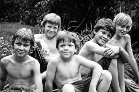

Blog #1
I felt that I recovered well after the plane crash. I found myself on an island but the scene was gorgeous and I already made a new friend, Piggy. He wore glasses and was vulnerable to bullying but I thought he was cool.
I had a kickstart on the island when I found a conch and one word can describe it: loud. When I blew into it, birds flew from the trees. Besides uncovering the birds, I uncovered a few boys who were probably also from the same plane that crashed landed.
We introduced ourselves and decided to build a civilization. A civilization required a leader so we had an election. Some hotshot named Jack thought he could just bud in and elect himself leader without giving other people a chance. Soon enough, we had a proper election and everyone raised their hands when it was time to vote for me. That was great. I got to be the leader of a civilization in a beautiful paradise. It was a great recovery from the crash and I thought that life wouldn’t be much different than before. Everyone was humane and will take care of each other and there were plenty of pigs we could hunt and eat. Everything was planned out. For instance, if it was time to regroup, I would just blow the conch and there be would order. Moreover, whoever held the conch their hand could talk. Civilization was everywhere humans walked. I could live with the new lifestyle and I was looking forward to it. We would be perfectly fine from that day forward.